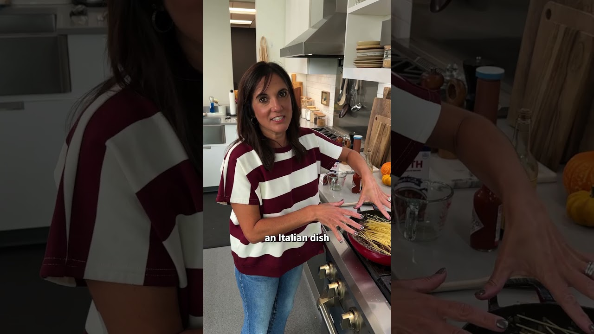

| Course | Main Dish |
| Categories | Beef, Pork, Pasta |
| Collections | One Pot, Allrecipes |
| Source | Allrecipes – YouTube |
| Notes | see “Notes” below |

Reconstructed from the video's narration — this is a 46-second Short with no quantities given, and the description is a promo blurb (no recipe, no creator recipe in the comments). Steps below are as narrated; every amount is a gap. Allrecipes very likely has the full measured recipe on allrecipes.com.
Bacon
Onion
Garlic
Salt
Black pepper
Ground beef
Broth
Worcestershire sauce
Hot sauce
Uncooked spaghetti
1 can Rotel (diced tomatoes with green chiles)
Fire-roasted tomatoes (canned)
Tomato sauce (canned)
Shredded cheese
Green onions
Cook the bacon in the pan. Remove it, leaving the drippings; chop the bacon and set it aside in two portions.
Cook the onion in the bacon drippings.
Add the garlic, salt, and pepper.
Add the ground beef and cook until browned and crumbled.
Stir in the broth, Worcestershire, hot sauce, and half the bacon.
Add the uncooked spaghetti, making sure the strands are all separated.
Top with the Rotel, fire-roasted tomatoes, and tomato sauce. Do not stir.
Cover and cook for 20 minutes, until the pasta is tender and the liquid is absorbed.
Stir well to combine. Top with the cheese and the rest of the bacon. Cover and cook 5 more minutes.
Top with green onions and serve.
The pasta goes in uncooked and cooks in the liquid — don't stir after adding the tomatoes; let it sit covered.
Gap in this export: Any quantities — bacon, onion, garlic, salt, pepper, ground beef, spaghetti, cheese, green onions
Gap in this export: Type and amount of broth (likely beef)
Gap in this export: Amounts of Worcestershire and hot sauce
Gap in this export: Can sizes for the Rotel, fire-roasted tomatoes, and tomato sauce
Gap in this export: Type of cheese
Gap in this export: Prep time and number of servings